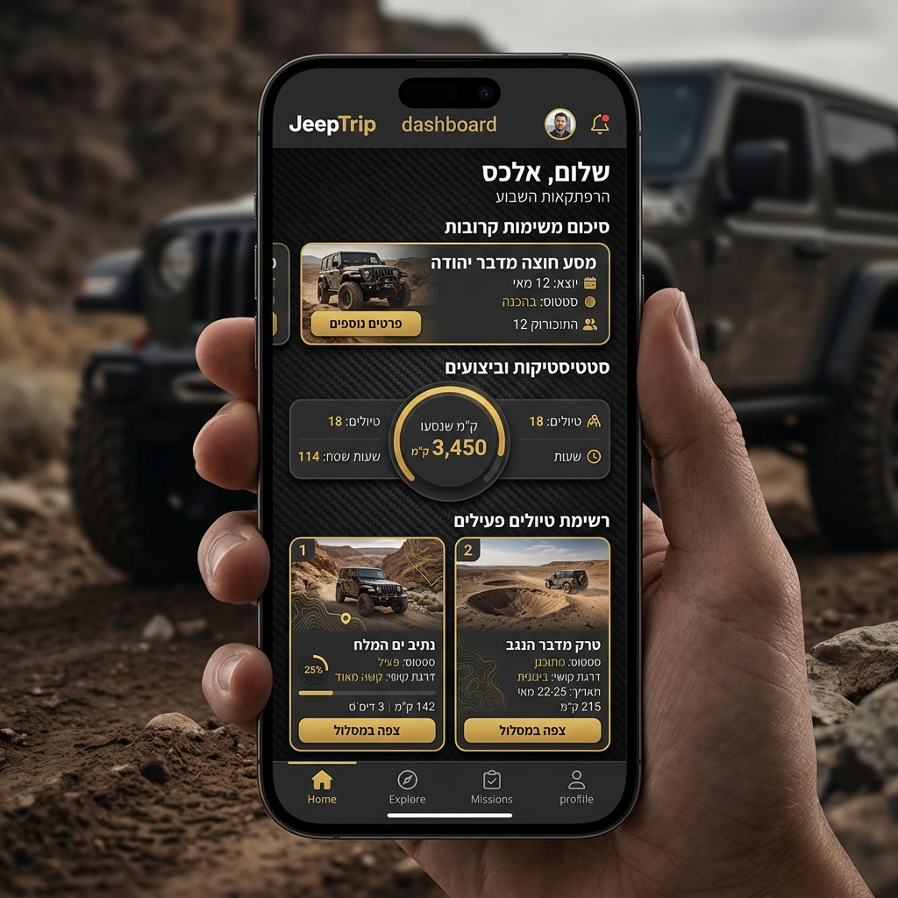
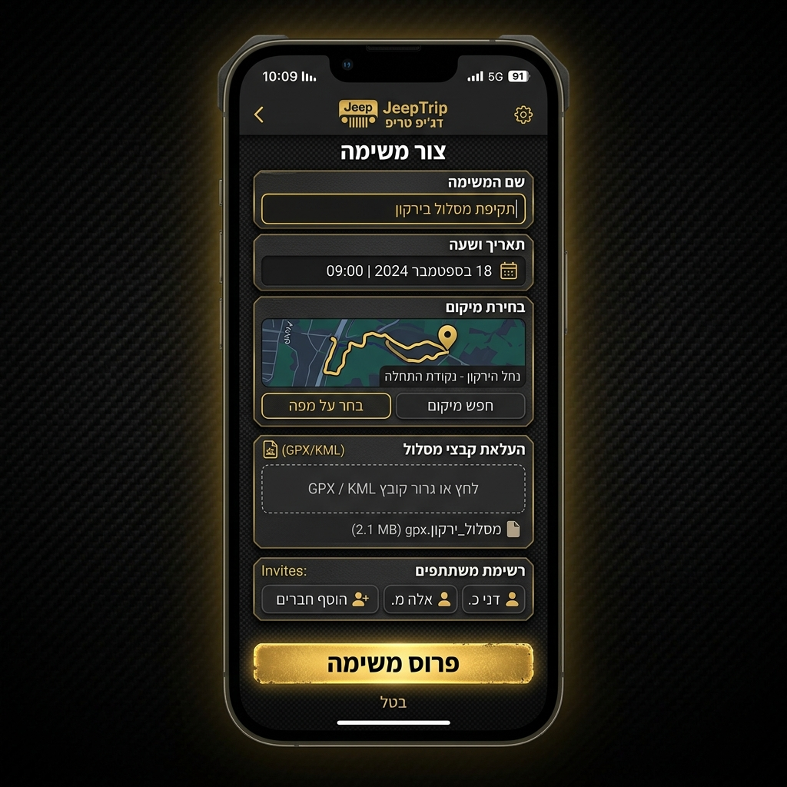
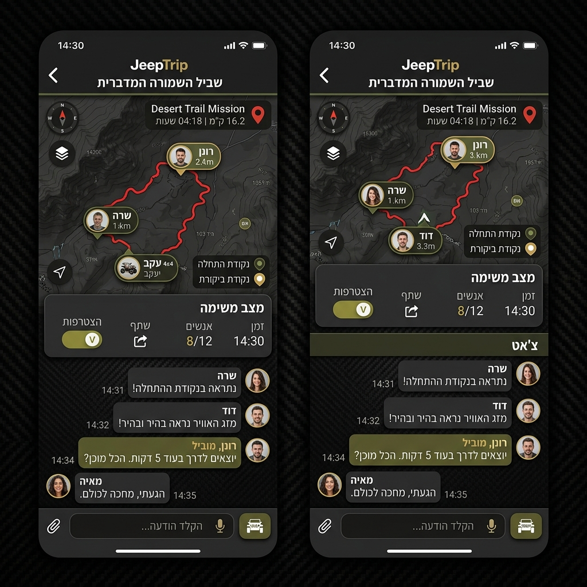

JeepTrip
המדריך המלא למשתמש 🧭🚙
ברוכים הבאים ל-JeepTrip, המפקדה הדיגיטלית שלכם לניהול משימות וטיולי שטח. המערכת תוכננה במיוחד לנהגי שטח מקצועיים שרוצים לשמור על קשר, לתאם מסלולים ולנהל את השיירה בסטנדרט הגבוה ביותר.
🏗️ 1. הרשמה וכניסה למערכת
כדי לשמור על קהילה איכותית ובטוחה, JeepTrip פועלת בשיטת "אישור מנהל".
- הרשמה: מלאו את פרטיכם האישיים ופרטי הרכב.
- ממתין לאישור: לאחר ההרשמה, חשבונכם יועבר לבדיקת מנהל מערכת.
- גישה מלאה: ברגע שתאושרו, תקבלו גישה לכל יכולות האפליקציה והווב.
📊 2. מסך הבית (Headquarters)
במסך הבית תוכלו לראות את כל המשימות הפעילות אליהן אתם רשומים.

- סיכום משימות: צפייה במשימות הקרובות ביותר שלכם.
- סטטיסטיקה: מעקב אחרי קילומטראז' מצטבר ושעות שטח (בקרוב).
- ניווט מהיר: גישה מהירה ליצירת משימה או פרופיל.
➕ 3. יצירת משימה חדשה
כדי לפתוח טיול חדש, לחצו על כפתור ה-"+" והזינו את פרטי המסע.

- פרטי המשימה: תנו כותרת מרשימה, בחרו תאריך ושעה.
- מיקום: סמנו את נקודת המפגש על המפה.
- קובצי מסלול: העלו קובצי GPX כדי שכולם יראו את הנתיב המדויק.
- פרטיות: בחרו אם המשימה תהיה ציבורית או חבויה (רק למוזמנים).
🗺️ 4. בתוך המשימה - מפה ותקשורת
כאן הלב הפועם של JeepTrip. תיאום מושלם לפני ובמהלך הנסיעה.

- מפת משימה: צפייה בתוואי השטח ובמיקום המשתתפים.
- צאט ייעודי: שלחו הודעות קוליות, תמונות ועדכונים מהשטח.
- אישור הגעה (RSVP): ראו מי מגיע ומי לא.
- שיתוף: שלחו קישור הזמנה מהיר בוואטסאפ.
⚙️ 5. פרופיל והגדרות
- פרטי רכב: עדכנו את סוג הג'יפ והשיפורים שלכם.
- השתקת התראות: הפעילו את מצב ה-Mute בהגדרות.
- שפה: תמיכה מלאה בעברית ובאנגלית.